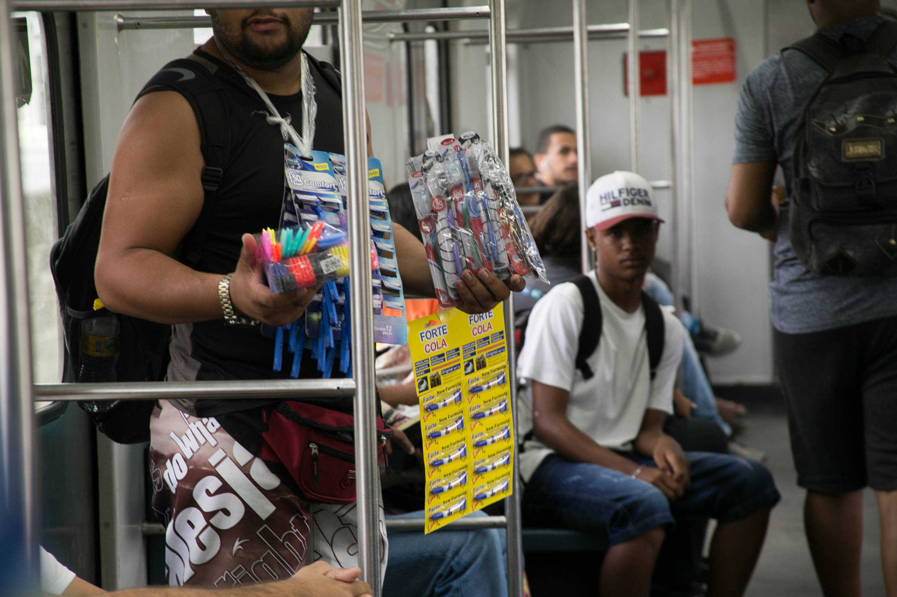

Veja alguns exemplos

Os serviços de motoboy vem crescendo bastante nos ultimos anos de diversos modos. Alguns são freelancer, trabalhando por si em diversos lugares, enquanto outros trabalham para alguma empresa ou loja. Mas em ambos os casos os riscos são os mesmos, principalmente em lugares movimentados como São Paulo. As mortes de motociclistas na cidade subiram cerca de 20% no ano passado, segundo levantamento realizado pelo Departamento Estadual de Trânsito (Detran). Foram 483 mortes em 2024, contra 403 em 2023. As mortes em acidentes com motos representam 37% do total dos óbitos no trânsito da capital paulista.
Isso mostra o quão perigoso é essa profissão, e algumas pessoas vivem disso por não ter recursos, escolaridade ou estabilidade em sua vida. Esse é só um dos varios exemplos existentes, e diversas pessoas não podem sair desse risco, senão perdem o pouco que já tem. Vejamos outro exemplo.
O comercio ambulante em Recife é outro que vem crescendo bastante. Desde itens cotidianos até comidas, essas pessoas vendem uma enorme variedade de produtos por preços baixos e chamativos, mas essa profissão também tem seus riscos. Muitos desses ambulantes tem suas mercadorias apreendidas por policiais, e também são agredidos muitas vezes pelos mesmos, o que pode afetar gravemente sua saúde física e mental. Com suas mercadorias apreendidas, eles podem ficar sem seu sustento por um longo periodo de tempo, enquanto sofrem para se manter financeiramente.
Enquanto alguns vivem essa realidade, outros podem até ter um emprego em uma empresa grande e conseguem manter as contas pagas e os armarios com comida, mas o alto custo disso é sua vida. Alguns ambientes de trabalho podem ser ofensivos para seus empregados de diversas formas, e até com a consciencia do empregador.